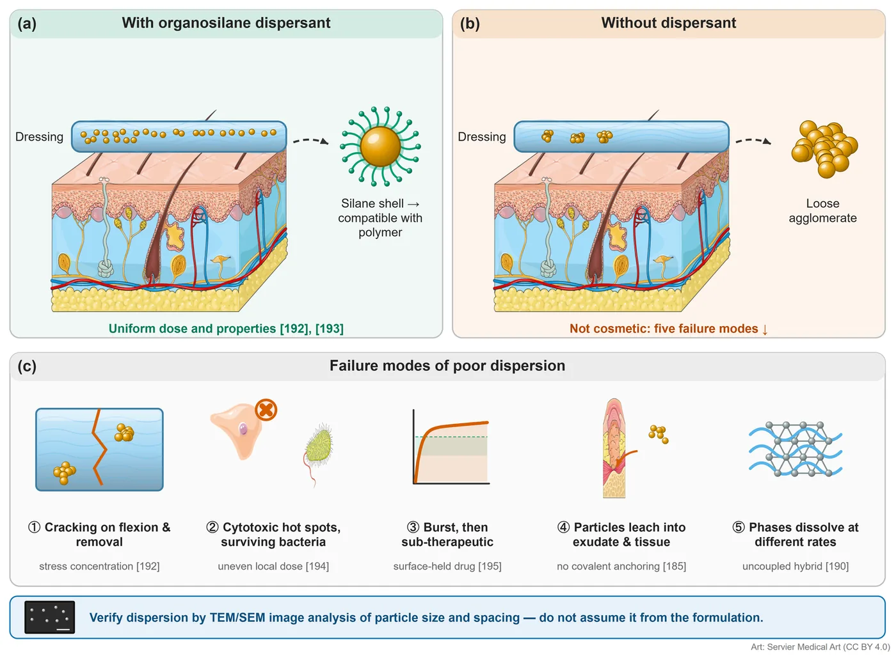
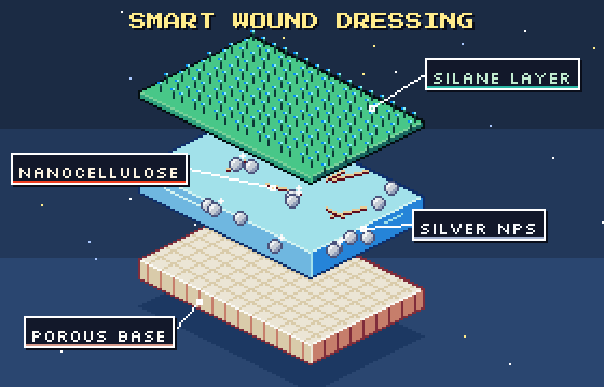
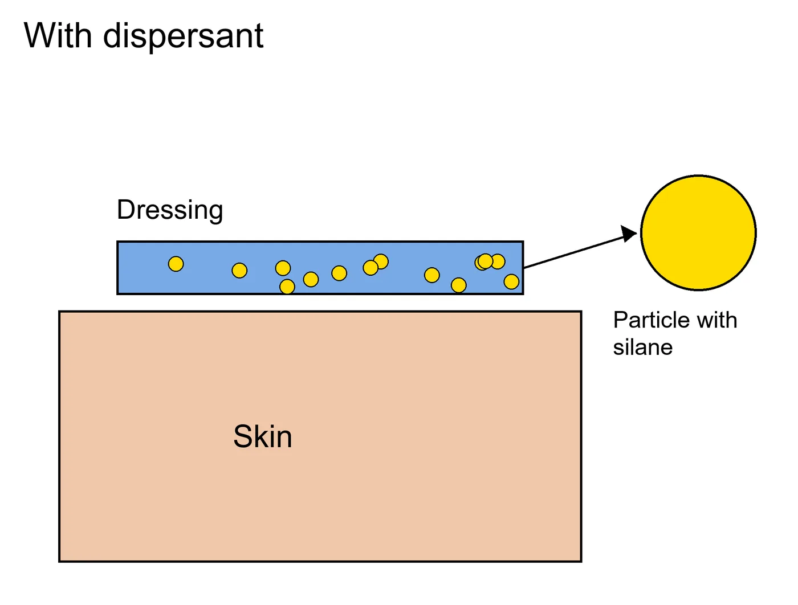
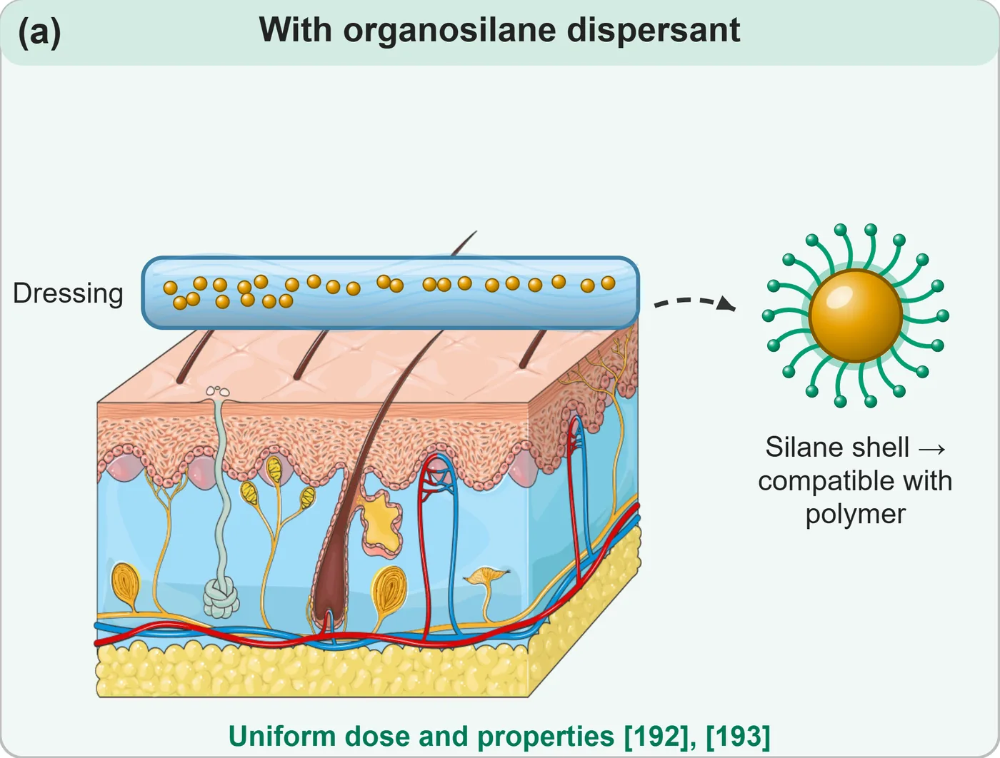
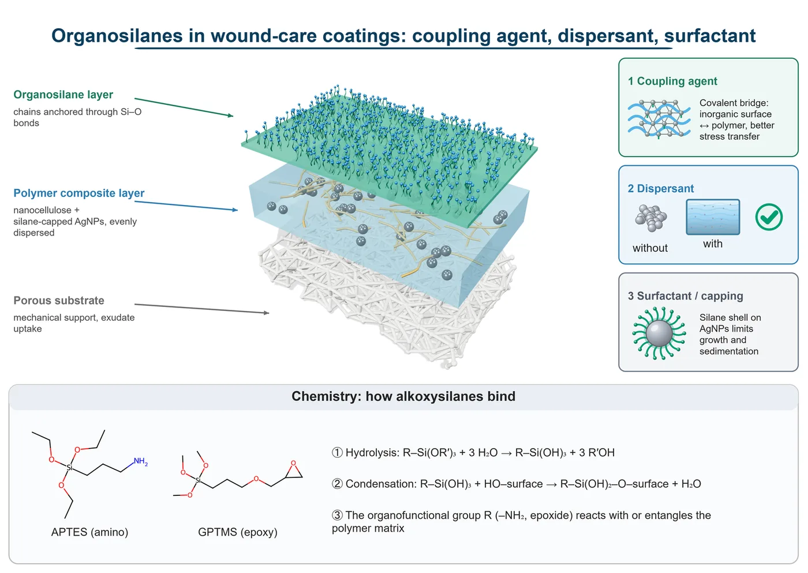
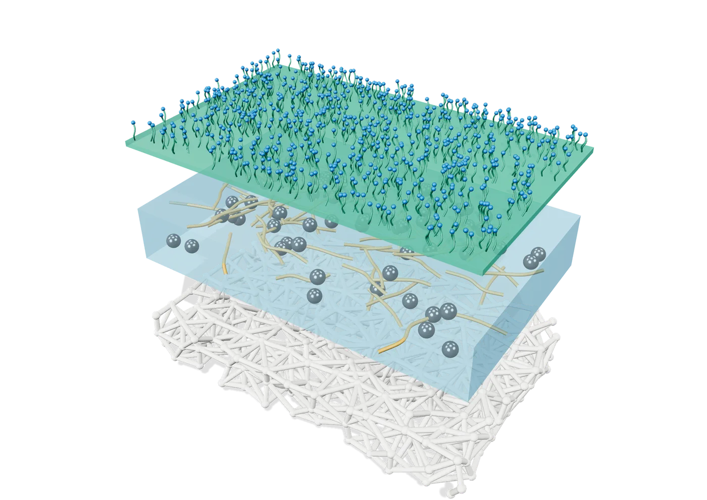
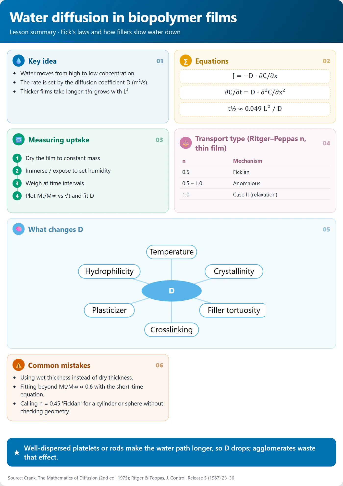
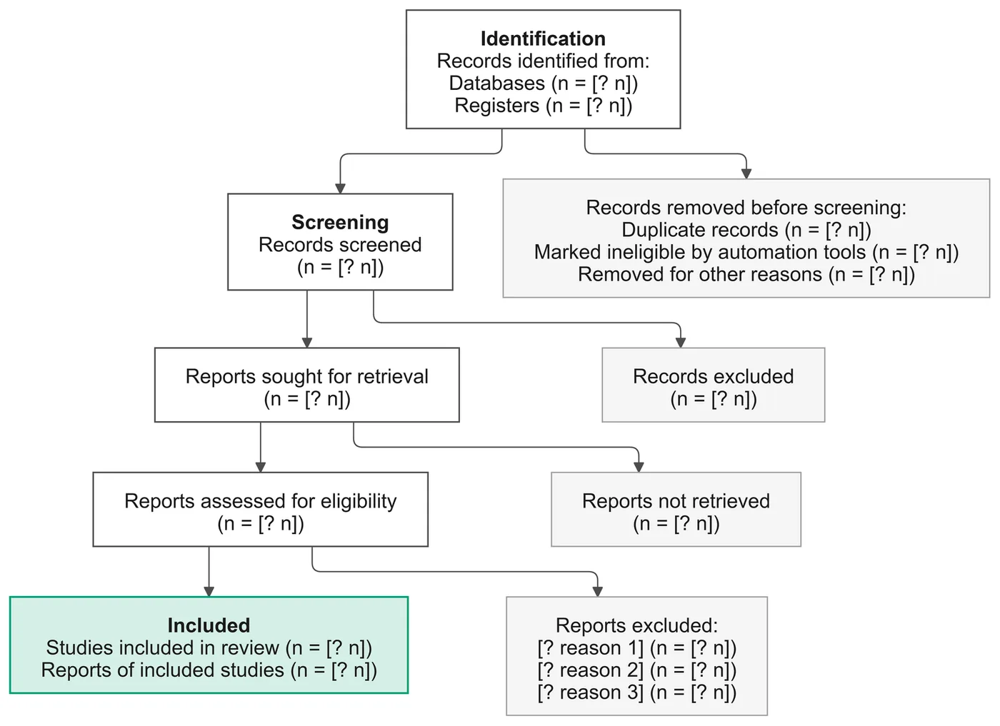

Paragraph in.
Figure out.
Paste a paragraph of your paper. Your AI agent writes the figure as editable code and renders it with medical-grade free art — a free alternative to drawing in BioRender or PowerPoint. No AI image generation, no account.
What you type, what you get.
Both results below came from these exact prompts. The agent writes a short spec; you can open it and change any word, colour or position.
“Show how an organosilane dispersant keeps silver nanoparticles evenly spread in a wound dressing — with vs without, and the failure modes when dispersion is poor. Use the references in my paragraph.”
The agent writes (excerpt) · full spec ↗{"type": "panel", "title": "With organosilane dispersant"}
{"type": "image", "path": "art/Dermatology_s4_1.png", "license": "cc-by-4.0"}
{"type": "icon", "icon": "film_cross_section", "params": {"dispersion": "uniform"}}
{"type": "icon", "icon": "coated_nanoparticle", "label": "Silane shell"}

“Same dressing, but as pixel art for an Instagram post.”
The agent writes (excerpt) · full spec ↗{"type": "slab", "id": "comp", "color": "#6FB7E0", "pattern": "glass"}
{"type": "spheres", "on": "comp", "r": 3, "sparkle": true}
{"type": "label", "text": "SILVER NPs", "to": [168, 106]}

Same content, side by side


One skill, every format a researcher needs.
You don't have to name the format. The skill reads what you attach, where it will be used and how you ask — picks one, and tells you its choice so you can redirect it.
Scientific figures
Graphical abstracts, mechanisms, comparison panels, experimental setups.
Data plots
FTIR, XRD, TGA, tensile, release curves from your CSV or Excel — multi-panel, vector text.
Diagrams from text
Flowcharts, PRISMA, timelines and concept maps from a pasted paragraph.
3D models
Layers, particles, molecules and devices you can rotate, recolour and export at 4×.
Lesson summaries
One card per lesson: key ideas, equations, steps, tables, common mistakes.
Video & simulations
Motion-graphics explainers with an original soundtrack, and interactive process simulations.
Every image is code you can edit.




Code, not pixels. So you can edit it.
You describe
Paste a paragraph, attach data or notes, or say what you need — in English or Arabic. It asks one question: academic or pixel-art style.
The agent writes a spec
A short JSON file. Cheap in tokens, and the same spec always gives the same result.
Scripts render it
Python and Node turn it into SVG, PDF, 3D, PNG or MP4. It looks at the result, fixes overlaps, then hands it to you with the spec.
One folder. Any agent.
Needs Python 3.10+ and Node 18+. First figure in about two minutes; the optional art libraries (~1 GB) download once, the first time you search them.
git clone https://github.com/charaflokman/scientific-illustration ~/.claude/skills/scientific-illustration
python ~/.claude/skills/scientific-illustration/scripts/setup_check.py
# then just ask your agent "Make a graphical abstract from this methods section" "Plot my FTIR and TGA CSVs as panels (a) and (b)" "اعمل لي ملخص لهذا الدرس" → "Summarise this lesson for me"
8,806 drawings, credited for you.
| Library | Licence | Drawings |
|---|---|---|
| Servier Medical Art searched first — drawn by medical illustrators | CC BY 4.0 | 1,801 |
| DBCLS TogoTV | CC BY 4.0 | 2,069 |
| Bioicons | per icon | 2,830 |
| Health Icons | CC0 | 2,106 |
What it can't do.
- No photo-realism. It draws schematics and 3D renders, not photographs or micrographs.
- Library art is raster. Servier drawings are high-resolution PNG; labels and shapes stay vector.
- You still check the science. It never invents data, but a wrong prompt gives a wrong figure.
- Agent quality matters. Stronger models plan better layouts; smaller ones may need a second pass.
- Video needs Node and a few minutes to render; Remotion is free for individuals and teams of up to 3.
Questions researchers ask.
Is it really free?
Yes. The skill is MIT-licensed and the art libraries are free (CC BY 4.0 or CC0). You pay only for the AI agent you already use. A typical figure costs a few thousand tokens because the agent writes a short spec, not an image.
Which AI agents and models work?
Any agent that can read files and run shell commands: Claude Code, Codex CLI, Gemini CLI, Cursor, GitHub Copilot, Cline, OpenCode and others, with any model. Nothing depends on a specific vendor.
Will a journal accept these figures?
The figures are vector SVG/PDF at journal widths (e.g. 180 mm), with colour-blind-safe palettes and credited art. Check your journal's artwork rules as you would for any figure; the pixel-art style is meant for teaching and social media, not papers.
Can I edit the result in Illustrator or Inkscape?
Yes. Open the SVG or PDF directly. Each figure also comes with a browser editor and its JSON spec, so you can ask the agent for changes in words.
How is this different from BioRender or AI image generators?
BioRender is a paid drag-and-drop editor. Image generators invent pixels and can't be edited precisely. This skill writes the figure as code from your text, uses real medical art, keeps every label editable and never makes up data.
Does my unpublished work leave my computer?
No. Rendering runs locally. Only the art libraries and fonts are downloaded, once. What your AI agent sends to its own provider is governed by that agent's settings.